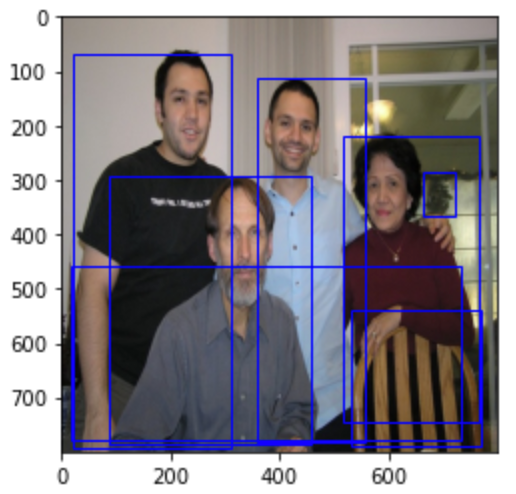
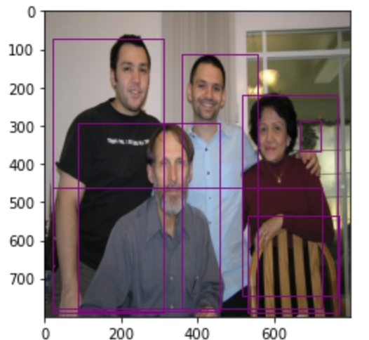

2.3 Faster-RCNN网络¶
学习目标
- 熟悉FasterRCNN目标检测的思想
- 知道anchor（锚框）的思想
- 掌握RPN网络是如何进行候选区域的生成的
- 掌握ROIPooling的使用方法
- 知道fasterRCNN的训练方法
在R-CNN和Fast RCNN的基础上，在2016年提出了Faster RCNN网络模型，在结构上，Faster RCNN已经将候选区域的生成，特征提取，目标分类及目标框的回归都整合在了一个网络中，综合性能有较大提高，在检测速度方面尤为明显。接下来我们给大家详细介绍fasterRCNN网络模型。网络基本结构如下图所示：
Faster RCNN可以看成是区域生成网络(RPN)与Fast RCNN的组合，其中区域生成网络(RPN)替代选择性搜索来生成候选区域，Fast RCNN用来进行目标检测。
1. 网络工作流程¶
FasterRCNN的工作流程是：
1、特征提取：将整个图像缩放至固定的大小输入到CNN网络中进行特征提取，得到特征图。
2、候选区域提取：输入特征图，使用区域生成网络RPN，产生一些列的候选区域
3、ROIPooling: 与Fast RCNN网络中一样，使用最大池化固定候选区域的尺寸，送入后续网络中进行处理
4、目标分类和回归：与Fast RCNN网络中一样，使用两个同级层:K+1个类别的SoftMax分类层和边框的回归层，来完成目标的分类和回归。
Faster R-CNN的流程与Fast R-CNN的区别不是很大，重要的改进是使用RPN网络来替代选择性搜索获取候选区域，所以我们可以将Faster R-CNN网络看做RPN和Fast R-CNN网络的结合。
接下来我们使用torchvison工具包来看下fasterRCNN预训练模型的使用过程。torchvision安装时直接使用：
pip install torchvision
即可，在安装torchvision时，应保证已安装了pytorch。
接下来我们按照以下步骤进行目标检测：
- 获取数据和加载预训练网络
- 获取网络的目标检测结果
该部分代码在fasterRCNN.ipynb中，首先导入相应的工具包:
# pytorh相关的工具包
import torch
import torchvision
import torchvision.transforms as transforms
from torchvision.io import read_image
# 读取图像的工具包
from PIL import Image
# 绘图
import matplotlib.pyplot as plt
1.1 数据加载¶
该部分代码在fasterRCNN.ipynb中，加载一张图片送入网络中进行预测：
# 获取图片
img = Image.open('img3.jpg')
plt.imshow(img)
图片展示如下：
原始图像的大小
img.size
输出为：
(994, 734)
在将图像送入网络之前，我们对其进行了尺度的调整，类型转换等处理，如下所示：
# 将图片格式转换为tensor形式，大小转换为800x800的大小
transform = transforms.Compose([transforms.ToTensor(),transforms.Resize((800,800))])
img = transform(img)
送入网络中图像的大小为：
img.shape
输出为(pytorch中送入网络中的图像的表示形式【C，H，W】)：
torch.Size([3, 800, 800])
我们将其展示出来，如下所示：
# 进行通道的调整
plt.imshow(img.permute(1,2,0))
展示结果为：
图像被我们从原始的(994, 734)转换为800x800的大小，可送入网络中进行预测。
1.2 模型加载¶
该部分代码在fasterRCNN.ipynb中，加载使用coco数据集预训练的模型，对图像进行预测，CoCo数据预训练的模型可检测90类的目标，如下所示：
# coco数据集的class，共90个类别：人，自行车，火车，。。。
coco_names = [
'__background__', 'person', 'bicycle', 'car', 'motorcycle', 'airplane', 'bus',
'train', 'truck', 'boat', 'traffic light', 'fire hydrant', 'N/A', 'stop sign',
'parking meter', 'bench', 'bird', 'cat', 'dog', 'horse', 'sheep', 'cow',
'elephant', 'bear', 'zebra', 'giraffe', 'N/A', 'backpack', 'umbrella', 'N/A', 'N/A',
'handbag', 'tie', 'suitcase', 'frisbee', 'skis', 'snowboard', 'sports ball',
'kite', 'baseball bat', 'baseball glove', 'skateboard', 'surfboard', 'tennis racket',
'bottle', 'N/A', 'wine glass', 'cup', 'fork', 'knife', 'spoon', 'bowl',
'banana', 'apple', 'sandwich', 'orange', 'broccoli', 'carrot', 'hot dog', 'pizza',
'donut', 'cake', 'chair', 'couch', 'potted plant', 'bed', 'N/A', 'dining table',
'N/A', 'N/A', 'toilet', 'N/A', 'tv', 'laptop', 'mouse', 'remote', 'keyboard', 'cell phone',
'microwave', 'oven', 'toaster', 'sink', 'refrigerator', 'N/A', 'book',
'clock', 'vase', 'scissors', 'teddy bear', 'hair drier', 'toothbrush'
]
实例化faster-RCNN模型，并加载预训练好的模型参数：
# 实例化模型
model = torchvision.models.detection.fasterrcnn_resnet50_fpn(pretrained=True)
将模型设置为预测模式：
# 将模型设置为eval模式
model.eval()
这时我们可以大致看下模型的结构，为了更清晰的了解fasterRCNN的结构，删除了一些细节信息，如下所示：
FasterRCNN(
(transform): GeneralizedRCNNTransform(
Normalize(mean=[0.485, 0.456, 0.406], std=[0.229, 0.224, 0.225])
Resize(min_size=(800,), max_size=1333, mode='bilinear')
)
(backbone): BackboneWithFPN(
(body): IntermediateLayerGetter(
(conv1): Conv2d(3, 64, kernel_size=(7, 7), stride=(2, 2), padding=(3, 3), bias=False)
(bn1): FrozenBatchNorm2d(64, eps=0.0)
(relu): ReLU(inplace=True)
(maxpool): MaxPool2d(kernel_size=3, stride=2, padding=1, dilation=1, ceil_mode=False)
。。。。。
(fpn): FeaturePyramidNetwork(
(inner_blocks): ModuleList(
(0): Conv2d(256, 256, kernel_size=(1, 1), stride=(1, 1))
(1): Conv2d(512, 256, kernel_size=(1, 1), stride=(1, 1))
(2): Conv2d(1024, 256, kernel_size=(1, 1), stride=(1, 1))
(3): Conv2d(2048, 256, kernel_size=(1, 1), stride=(1, 1))
。。。。
)
)
(rpn): RegionProposalNetwork(
(anchor_generator): AnchorGenerator()
(head): RPNHead(
(conv): Conv2d(256, 256, kernel_size=(3, 3), stride=(1, 1), padding=(1, 1))
(cls_logits): Conv2d(256, 3, kernel_size=(1, 1), stride=(1, 1))
(bbox_pred): Conv2d(256, 12, kernel_size=(1, 1), stride=(1, 1))
)
)
(roi_heads): RoIHeads(
(box_roi_pool): MultiScaleRoIAlign(featmap_names=['0', '1', '2', '3'], output_size=(7, 7), sampling_ratio=2)
(box_head): TwoMLPHead(
(fc6): Linear(in_features=12544, out_features=1024, bias=True)
(fc7): Linear(in_features=1024, out_features=1024, bias=True)
)
(box_predictor): FastRCNNPredictor(
(cls_score): Linear(in_features=1024, out_features=91, bias=True)
(bbox_pred): Linear(in_features=1024, out_features=364, bias=True)
)
)
)
从这里可以看出，torchvision中的fasterRCNN的主要包含：
- Transform: 完成数据的标准化处理，并且设置图像的大小最小为800
- backbone: 主要包括特征提取的body部分和特征融合fpn网络
- rpn: 主要用来生成候选区域
- Roi_heads: 返回检测结果
1.3 模型预测过程¶
该部分代码在fasterRCNN.ipynb中，接下来我们将数据送入网络中进行预测：
# 直接进行预测
pred = model([img])
预测结果中包括网络的检测框，类别信息及每个检测框对应的置信度值，如下所示：
[{'boxes': tensor([[ 22.1207, 68.7210, 309.7885, 791.1606],
[359.6369, 110.5316, 558.7224, 780.3055],
[ 86.0154, 291.1066, 458.9595, 785.5111],
[516.1552, 217.6513, 767.1631, 745.2240],
[532.2499, 537.4729, 771.5016, 790.0735],
[664.4442, 284.9143, 722.0727, 367.2327],
[ 18.3442, 456.8345, 734.2274, 777.7546]], grad_fn=<StackBackward0>),
'labels': tensor([ 1, 1, 1, 1, 62, 64, 15]),
'scores': tensor([0.9981, 0.9981, 0.9980, 0.9962, 0.9832, 0.0695, 0.0604],
grad_fn=<IndexBackward0>)}]
每个检测框对应的类别通过labels进行表示，接下来我们获取每个检测框的类别名称：
# 获取类别名称,框及对应的置信度
pred_class = [coco_names[i] for i in list(pred[0]['labels'].numpy())]
pred_boxes = [[(i[0], i[1]), (i[2], i[3])] for i in list(pred[0]['boxes'].detach().numpy())]
pred_score = list(pred[0]['scores'].detach().numpy())
将框的类别如下所示：
['person', 'person', 'person', 'person', 'chair', 'potted plant', 'bench']
对应的概率值为：
[0.9980987,
0.9980934,
0.9980253,
0.99623007,
0.9832487,
0.069459654,
0.060414173]
我们将这些框绘制在图像上：
# 图像读取
img = Image.open('img3.jpg').resize((800,800))
# 图像展示
fig = plt.imshow(img)
# 将框绘制在图像上
for index, boxes in enumerate(pred_boxes):
fig.axes.add_patch(plt.Rectangle(
xy=(boxes[0]), width=boxes[1][0]-boxes[0][0], height=boxes[1][1]-boxes[0][1],
fill=False, edgecolor="blue", linewidth=1))
plt.show()

在这些预测框中有些目标的置信度较低，我们进行过滤，设置置信度阈值：
# 过滤分数较低的预测
threshold=0.5
# 因pred_score是从大大小进行排列的，只要获取最后一个索引即可
pred_t = [pred_score.index(x) for x in pred_score if x > threshold][-1]
pred_boxes = pred_boxes[:pred_t + 1]
pred_class = pred_class[:pred_t + 1]
获取过滤后的框及对应的类别结果展示在图像上：
# 将过滤后的结构绘制在图像上
img = Image.open('img3.jpg').resize((800,800))
# 绘制图像
fig = plt.imshow(img)
# 将框绘制在图像上
for index, boxes in enumerate(pred_boxes):
fig.axes.add_patch(plt.Rectangle(
xy=(boxes[0]), width=boxes[1][0]-boxes[0][0], height=boxes[1][1]-boxes[0][1],
fill=False, edgecolor="g", linewidth=1))
plt.show()
最终的检测结果：
上述我们介绍了Faster RCNN的工作流程并且给大家展示了网络的检测结果。那接下来我们解决以下几个问题：
1、网络中的每一部分是怎么构建，怎么完成相应的功能的？
2、怎么训练fastrcnn网络去完成我们自己的任务？
那接下来我们就解决上述问题。
2.模型结构详解¶
Faster RCNN的网络结构如下图所示：
我们依然将网络分为四部分：
- Backbone：Backbone由CNN卷积神经网络构成，常用的是VGG和resnet, 用来提取图像中的特征，获取图像的特征图。该特征图被共享用于后续RPN层生成候选区域和ROIPooling层中。
- RPN网络：RPN网络用于生成候选区域，用于后续的目标检测。
- Roi Pooling: 该部分收集图像的特征图和RPN网络提取的候选区域位置，综合信息后获取固定尺寸的特征，送入后续全连接层判定目标类别和确定目标位置。
- 目标分类与回归: 该部分利用ROIpooling输出特征向量计算候选区域的类别，并通过回归获得检测框最终的精确位置。
接下来我们就从这四个方面来详细分析fasterRCNN网络的构成，并结合源码理解每一部分实现的功能。
在进行网络处理前，我们先将图像送入transform进行处理：该部分代码在fasterRCNN.ipynb中，
# 送入网络中的数据是【N,C,H,W】
images = [img]
images, targets = model.transform(images, targets=None)
接下来讲images送入网络中进行处理即可。
2.1backbone¶
backbone一般为VGG，ResNet等网络构成，主要进行特征提取，将最后的全连接层舍弃，得到特征图送入后续网络中进行处理。
在源码中使用ResNet + FPN 结构来提取特征。与普通的 FasterRCNN 只需要将一个特征图输入到后续网络中不同，由于加入 FPN结构，需要将多个特征图逐个送入到后续网络中，如下图所示：
Resnet进行特征提取，FPN结构作用是当前层的特征图会融合未来层的特征进行上采样，并加以利用。因为有了这样一个结构，当前的特征图就可以获取未来层的信息，也就将低阶特征与高阶特征就有机融合起来了，提升检测精度。如下图所示：

在这里ResNet和FPN的完整结构如下图所示:Resnet进行特征提取，FPN网络进行特征融合获取多个特征图后，输入到RPN网络中的特征图是[p2,p3,p4,p5,p6] ，而作为后续目标检测网络FastRCNN的输入则是 [p2,p3,p4,p5] 。

我们看下源码实现的内容：
1、resnet特征提取的结果
# 使用backbone获取特征图
features_body = model.backbone.body(images.tensors)
C2,C3,C4,C5 = features_body.values()
C2,C3,C4,C5是resnet进行特征提取的结果，送入网络中图像大小为（3，800，800），经过特征提取后特征图的大小为：
# C2.size():800/4
torch.Size([1, 256, 200, 200])
# C3.size():800/8
torch.Size([1, 512, 100, 100])
# C4.size():800/16
torch.Size([1, 1024, 50, 50])
# C5.size():800/32
torch.Size([1, 2048, 25, 25])
2、FPN特征融合的结果
# FPN网络融合：C2,C3,C4,C5是resnet提取的特征结果
features_fpn = model.backbone.fpn(features_body)
P2,P3,P4,P5,P6 = features_fpn.values()
P2,P3,P4,P5,P6是特征融合之后的结果，送入后续网络中，其特征图的大小：
# P2.size():800/4
torch.Size([1, 256, 200, 200])
# P3.size():800/8
torch.Size([1, 256, 100, 100])
# P4.size():800/16
torch.Size([1, 256, 50, 50])
# P5.size():800/32
torch.Size([1, 256, 25, 25])
# P6.size():800/64
torch.Size([1, 256, 13, 13])
那网络的整体架构表示成：

2.2 RPN网络¶
经典的检测方法生成检测框都非常耗时，如overfeat中使用滑动窗口生成检测框；或如R-CNN使用选择性搜索方法生成检测框。而Faster RCNN则抛弃了传统的滑动窗口和选择性搜索的方法，直接使用RPN生成候选区域，能极大提升检测速度。
RPN网络的主要流程是：
1、生成一系列的固定参考框anchors,覆盖图像的任意位置，然后送入后续网络中进行分类和回归
2、分类分支：通过softmax分类判断anchor中是否包含目标
3、回归分支：计算目标框对于anchors的偏移量，以获得精确的候选区域
4、最后的Proposal层则负责综合含有目标的anchors和对应bbox回归偏移量获取候选区域，同时剔除太小和超出边界的候选区域。
2.2.1 anchors¶
anchor在目标检测中表示 固定的参考框 ，首先预设一组不同尺度不同长宽比的固定参考框，覆盖几乎所有位置， 每个参考框负责检测与其交并比大于阈值 (训练预设值，常用0.5或0.7) 的目标 ，anchor技术将候选区域生成问题转换为 "这个固定参考框中有没有目标，目标框偏离参考框多远" ，不再需要多尺度遍历滑窗，真正实现了又好又快。
在FastRCNN中框出多尺度、多种长宽比的anchors,如下图所示：下图中分别是尺度为32，64，128，长宽比为1：1，1:2，2：1的一组anchors,我们利用这组anchor在特征图上进行滑动，并对应到原图上即可获取一系列的固定参考框。
由于有 FPN 网络，所以会在多个不同尺度特征图中生成anchor，假设某一个特征图大小为hxw，首先会计算这个特征相对于输入图像的下采样倍数 stride：

如下图所示：

每一个尺度特征图上生成不同比列的anchor:
得到一系列的anchors后就可送入后续网络中进行分类和回归。
该部分代码在fasterRCNN.ipynb中，在源码中我们可生成一幅图像对应的anchors:
# 生成anchors,送入图片信息及相应的特征图
anchors=model.rpn.anchor_generator(images,[P2,P3,P4,P5,P6])
对于800x800的图像生成的anchor的数量为：
# anchors[0].size()：
#200*200*3+100*100*3+50*50*3+25*25*3+13*13*3=159882
torch.Size([159882, 4])
anchor的取值为：
[tensor([[ -23., -11., 23., 11.],
[ -16., -16., 16., 16.],
[ -11., -23., 11., 23.],
...,
[ 370., 551., 1094., 913.],
[ 476., 476., 988., 988.],
[ 551., 370., 913., 1094.]])]
我们将前1000个anchor绘制在图像上：
# 将生成的anchor绘制在图像上
img = Image.open('img3.jpg').resize((800,800))
# 绘制图像
fig = plt.imshow(img)
# 将框绘制在图像上
for index, boxes in enumerate(anchors[0]):
if index <1000:
fig.axes.add_patch(plt.Rectangle(
xy=(boxes[0],boxes[1]), width=boxes[2]-boxes[0], height=boxes[3]-boxes[1],
fill=False, edgecolor="red", linewidth=1))
plt.show()
2.2.2 RPN分类¶
一副MxN大小的矩阵送入Faster RCNN网络后，经过backbone特征提取到RPN网络变为HxW大小的特征图。如下图所示，是RPN进行分类的网络结构：(k=9)
先做一个1x1的卷积，得到[batchsize,H,W,18]的特征图，然后进行变形,将特征图转换为[batchsize,9xH,W,2]的特征图后，送入softmax中进行分类，得到分类结果后，再进行reshape最终得到[batchsize,H,W,18]大小的结果,18表示k=9个anchor是否包含目标的概率值。

2.2.3 RPN回归¶
RPN回归的结构如下图所示：(k=9)
经过该卷积输出特征图为为[1, H, W,4x9]，这里相当于feature maps每个点都有9个anchors，每个anchors又都有4个用于回归的:
变换量。
该变换量预测的是anchor与真实值之间的平移量和尺度因子：

该部分代码在fasterRCNN.ipynb中，利用源码我们可以获得对anchors的分类和回归结果，我们以P2特征图为例：
# RPN网络预测分类，返回：logits送入softmax之前的分数
cls_logits = model.rpn.head.cls_logits(P2)
# RPN网络预测目标框
box_pred = model.rpn.head.bbox_pred(P2)
结果分析,P2特征图中一共有3x200x200个anchor，输出他们的分类和回归结果
# cls_logits.size(),每一个anchor都进行了分类分析
torch.Size([1, 3, 200, 200])
# box_pred.size() ：回归结果
torch.Size([1, 12, 200, 200])
其中 cls_logits的取值为：
tensor([[[[-4.9525, -8.6189, -7.9043, ..., -7.1153, -7.0152, -6.2087],
[-3.9093, -8.1554, -7.6761, ..., -5.7457, -5.2442, -5.4824],
[-2.8913, -6.4549, -6.1540, ..., -3.6381, -3.2611, -3.8778],
...,
[-4.0144, -7.9331, -7.2612, ..., -5.9252, -6.3376, -6.1646],
[-4.7249, -9.1262, -8.5185, ..., -7.1996, -7.6481, -7.1453],
[-2.5904, -5.4544, -5.0440, ..., -4.0076, -4.2866, -4.3868]],
[[-1.2397, -1.9357, -1.6008, ..., -2.5823, -2.3880, -2.2150],
[-0.0788, -0.5536, -0.3117, ..., -0.7293, -0.6024, -1.2866],
[ 0.2404, -0.4894, -0.1548, ..., 0.3993, 0.3727, -0.5295],
...,
[-0.8921, -1.7715, -1.1690, ..., -1.7273, -1.9882, -2.0136],
[-1.0738, -1.9363, -1.4287, ..., -2.0681, -2.2555, -2.2789],
[-0.4302, -0.6752, -0.3291, ..., -0.6979, -0.8793, -1.3372]],
[[-3.6792, -2.3455, -1.6957, ..., -1.8304, -2.2407, -1.3634],
[-2.5546, -0.3214, 0.2112, ..., 0.8942, 0.7678, 1.4243],
[-2.0823, -0.4618, 0.0860, ..., 0.9763, 0.9266, 1.4695],
...,
[-2.1660, -0.7442, -0.1336, ..., -1.9861, -2.1365, -0.4541],
[-2.7510, -1.3608, -0.9367, ..., -2.4219, -2.5253, -0.7463],
[-0.2392, 1.5965, 1.6274, ..., 1.0652, 1.1438, 1.5748]]]],
grad_fn=<MkldnnConvolutionBackward0>)
4.2.4 Proposal层¶
Proposal层负责综合RPN网络对anchors分类和回归的结果，利用回归的结果对包含目标的anchors进行修正，计算出候选区域，送入后续RoI Pooling层中。
Proposal层处理流程如下：
- 利用RPN网络回归的结果
对所有的anchors进行修正，得到修正后的检测框
- 根据RPN网络分类的softmax输出的概率值由大到小对检测框进行排序，提取前6000个结果，即提取修正位置后的检测框
- 限定超出图像边界的检测框为图像边界，防止后续roi pooling时候选区域超出图像边界。
-
对剩余的检测框进行非极大值抑制NMS
-
Proposal层的输出是对应输入网络图像尺度的归一化后的坐标值[x1, y1, x2, y2]。
到此RPN网络的工作就结束了。该部分代码在fasterRCNN.ipynb中，
# RPN网络生成proposal
proposal= model.rpn(images,features_fpn)
一共生成了1000个候选区域：
# proposal[0][0].size()
torch.Size([1000, 4])
结果为：
([tensor([[472.2222, 282.6704, 625.2900, 643.2105],
[480.1299, 394.6739, 674.9400, 728.7283],
[ 11.2800, 170.9804, 361.7238, 751.5059],
...,
[574.2663, 279.6072, 591.0003, 294.0474],
[577.7798, 278.1065, 596.8508, 299.1753],
[576.9445, 164.8038, 674.0577, 269.8643]])],
{})
将其绘制在图像上
# 候选区域的绘制
img = Image.open('img3.jpg').resize((800,800))
# 显示图像
fig = plt.imshow(img)
# 将候选区域显示在图像上
for index, boxes in enumerate(proposal[0][0]):
fig.axes.add_patch(plt.Rectangle(
xy=(boxes[0],boxes[1]), width=boxes[2]-boxes[0], height=boxes[3]-boxes[1],
fill=False, edgecolor="blue", linewidth=0.5))
plt.show()
2.3 ROIPooling¶
RoI Pooling层则负责收集RPN网络生成的候选区域，并将其映射到特征图中并固定维度，送入后续网络中进行分类和回归。
RoI Pooling 的作用过程，如下图所示：
RoIpooling使用最大池化将任何有效的RoI区域内的特征转换成具有pool_H×pool_W的固定空间范围的小的特征图，其中pool_H和pool_W是超参数，比如设置为7x7, 它们独立于任何特定的RoI,如下图所示：

在实现过程中，FPN网络产生了多个尺度特征图，那候选区域要映射到哪个特征图中呢？
在这里，不同尺度的ROI使用不同特征层作为ROI pooling层的输入，大尺度ROI就用后面一些的金字塔层，比如P5；小尺度ROI就用前面一点的特征层，比如P3，我们使用下面的公式确定ROI所在的特征层：
其中，224是ImageNet的标准输入，k0是基准值，设置为4，w和h是ROI区域的长和宽，假设ROI是112x112的大小，那么k = k0-1 = 4-1 = 3，意味着该ROI应该使用P3的特征层。k值会做取整处理，防止结果不是整数，而且为了保证k值在2-5之间，还会做截断处理。 该部分代码在fasterRCNN.ipynb中，
# ROI Pooling层实现:
pool_region_list = model.roi_heads.box_roi_pool(features_fpn, proposal[0],images.image_sizes)
输出结果为：每一个候选区域都被固定为7x7大小
# pool_region_list.size()
torch.Size([1000, 256, 7, 7])
具体如下所示：
tensor([[[[-3.0290e-01, -9.4801e-02, -3.3355e-01, ..., -4.7696e-01,
1.8509e-01, 6.6568e-01],
[ 4.8405e-01, -3.9127e-01, -1.2898e+00, ..., -9.8544e-01,
1.6745e-01, 6.4149e-01],
[ 2.6655e-01, -7.9603e-01, -7.8114e-01, ..., -5.4995e-01,
-1.2209e-01, 4.2529e-01],
...,
[-7.9032e-01, -4.3308e-01, -1.0445e+00, ..., -1.0004e+00,
-1.4248e+00, -1.0955e+00],
[-2.0235e-01, 1.2646e-01, 3.0089e-01, ..., -1.9803e-01,
-1.4375e+00, -1.3155e+00],
[ 4.0225e-01, 2.8825e-01, 3.6015e-01, ..., 1.7556e-01,
-6.1306e-01, -1.1433e+00]]]], grad_fn=<IndexPutBackward0>)
2.4 目标分类与回归¶
该部分利用获得的候选区域的特征图，通过全连接层与softmax计算每个候选区域具体属于的类别（如人，车，电视等），输出概率值；同时再次利用回归方法获得每个候选区域的位置偏移量，用于回归更加精确的目标检测框。该部分网络结构如下所示：

从RoI Pooling层获取到固定大小的特征图后，送入后续网络，可以看到做了如下2件事：
- 通过全连接和softmax对候选区域进行分类
- 再次对候选区域进行回归修正，获取更高精度的检测框
实现流程如下：该部分代码在fasterRCNN.ipynb中，
首先获取网络分类和回归的结果：
# 模型最终输出的结果
detection = model.roi_heads(features, proposal[0],images.image_sizes)
检测的结果如下所示：
([{'boxes': tensor([[359.8341, 111.3523, 558.0009, 777.9014],
[ 86.5611, 290.7203, 459.5951, 785.2094],
[ 22.1627, 70.4335, 309.8072, 790.7128],
[515.9180, 217.7970, 766.3583, 743.9280],
[531.3500, 536.5439, 771.5784, 790.1054],
[666.4915, 284.8808, 722.3298, 367.1904],
[ 19.0011, 460.5744, 728.2871, 777.8762]], grad_fn=<IndexBackward0>),
'labels': tensor([ 1, 1, 1, 1, 62, 64, 15]),
'scores': tensor([0.9982, 0.9981, 0.9980, 0.9958, 0.9854, 0.1073, 0.0618],
grad_fn=<IndexBackward0>)}],
{})
结果为：一共检测出7个目标，每个目标的目标位置，目标类别id，目标类别置信度等信息构成。
可以将其绘制在图像上：
# 检测结果的绘制
detection_boxes = detection[0][0]['boxes'].detach().numpy()
img = Image.open('img3.jpg').resize((800,800))
# 显示图像
fig = plt.imshow(img)
# 将检测结果绘制在图像上
for index, boxes in enumerate(detection_boxes):
fig.axes.add_patch(plt.Rectangle(
xy=(boxes[0],boxes[1]), width=boxes[2]-boxes[0], height=boxes[3]-boxes[1],
fill=False, edgecolor="purple", linewidth=1))
plt.show()

到这我们就完成了整个网络的介绍。
3 FasterRCNN的训练¶
Faster R-CNN的训练分为两部分，即RPN网络和检测网络fastRCNN的训练：

在介绍网络训练时，我们需要有标注好的训练集数据和网络模型，主要内容如下所示：
该部分代码在fasterRCNN.ipynb中，
- 数据集加载
在这里我们加载VOC数据集，该数据集中包含标注好的数据：
# 数据集记载
from voc_data_util import VocDataset,VOC_BBOX_LABEL_NAMES
dataset = VocDataset(root='/Users/mac/Desktop/计算机视觉/VOCdevkit/VOC2007', transforms = VocDataset.get_transform())
在这里我们依然以预测时的图片为例，展示数据的标注信息：
# 真实值的绘制
# 获取图像及对应的标注信息
img, targets = dataset[141]
img = img.permute(1, 2, 0).numpy().astype(np.uint8)
fig = plt.imshow(img)
# 将标注信息绘制在图像上
for index, boxes in enumerate(targets['boxes'].numpy()):
fig.axes.add_patch(
plt.Rectangle(xy=(boxes[0], boxes[1]),
width=boxes[2] - boxes[0],
height=boxes[3] - boxes[1],
fill=False,
edgecolor="green",
linewidth=1))
plt.show()
展示结果如下图所示：
- 模型加载
在这里加载模型我们不直接加载预训练模型，而是需要根据VOC数据集的类别个数20对模型进行修正，如下所示：
# 模型加载
# N+1包含背景
num_classes = 21
# 模型实例化：不使用预训练模型，修正类别个数，backbone使用预训练结果
model = torchvision.models.detection.fasterrcnn_resnet50_fpn(
pretrained=False,
num_classes=num_classes,
pretrained_backbone=True)
模型和数据加载进来我们就可以进行模型训练了。
3.1 RPN网络的训练¶
RPN网络的作用从众多的anchors中提取包含目标的，并且经过回归调整的候选区域。为了训练RPN，给每个anchor分配是否包含目标的标签，也就是正负样本的标记，然后进行训练。
3.1.1正负样本标记¶
正负样本的设置主要分为3类，如下所示：
- 与真实框ground truth（GT）交并比IOU大于0.7的anchor是正样本，即anchor中包含目标，目标值设为1
- 与真实框ground truth（GT）交并比IOU小于0.3的anchor是负样本，即anchor中不包含目标，目标值设为-1
- 其他的anchor舍弃，不参与网络的训练，目标值设为0
接下来，我们在代码中看下样本标记的结果：该部分代码在fasterRCNN.ipynb中，
将产生的159882个anchor与目标真实值的计算交并比设置正负样本：
# 获取anchor对应的目标值：输入：要设置正负样本的anchors(在前面我们已经生成过)，样本的真实值即标注信息；输出：rpn的分类目标值，RPN的回归目标值
rpn_label_matchs,rpn_target_deltas=model.rpn.assign_targets_to_anchors(anchors,[targets])
所有的anchor都设置了分类的目标值和回归的目标值，一共有159882个Anchor。
# anchor对应的分类目标值：rpn_label_matchs[0].size()
torch.Size([159882])
# 每个anchor对应的框的目标值：rpn_target_deltas[0].size()
torch.Size([159882, 4])
获取正样本：正样本是包含目标的anchor，其目标值设为1，正样本的个数是29个
# 属于正样本的anchors，与GT交并比较大的anchor,目标值设为1
positive_anchor_ids=torch.where(torch.eq(rpn_label_matchs[0],1))[0].numpy()
# 正样本的个数：positive_anchor_ids.shape
(15,)
# 将正样本绘制在图像上
# 绘制anchor的正样本
fig = plt.imshow(img)
# 遍历所有的正样本的anchor，绘制在图像上
for idx in positive_anchor_ids:
boxes = anchors[0][idx]
fig.axes.add_patch(plt.Rectangle(
xy=(boxes[0],boxes[1]), width=boxes[2]-boxes[0], height=boxes[3]-boxes[1],
fill=False, edgecolor="white", linewidth=1))
plt.show()
我们将这些正样本绘制在图像上：可以看出这些anchor与目标还是非常接近的
接下来，我们看下负样本的结果，负样本的目标值是-1，
# 负样本的anchor的id
negitivate_anchor_ids=torch.where(torch.eq(rpn_label_matchs[0],-1))[0].numpy()
# 负样本的个数为：negitivate_anchor_ids.shape
(712,)
# 绘制部分anchor的负样本
fig = plt.imshow(img)
# 遍历所有的正样本的anchor，绘制在图像上
for idx in negitivate_anchor_ids:
# 负样本的anchor
boxes = anchors[0][idx]
# 取余20为0的负样本进行展示
if idx % 20 == 0:
fig.axes.add_patch(
plt.Rectangle(xy=(boxes[0], boxes[1]),
width=boxes[2] - boxes[0],
height=boxes[3] - boxes[1],
fill=False,
edgecolor="white",
linewidth=1))
plt.show()
同样我们也将负样本展示在图像上，从图像可以看出这些负样本的anchor与目标差距还是很大的。
3.1.2 RPN网络的损失函数¶
RPN网络的损失函数是：

其中
-
i表示anchor的索引
-
p_i是第i个anchor 预测为目标的可能性，p_i^{*}为ground-truth标签。如果这个anchor是positive的，则ground-truth标签为1，否则为0。（即当第i个anchor与GT间IoU>0.7，认为是该anchor是positive，标签为1；反之IoU<0.3时，认为是该anchor是negative，标签为0）
-
t_i表示表示正样本anchor到预测区域bounding box的4个参数化预测结果,t_i^{*}是这个positive anchor对应的ground-truth box的偏移，如下所示：
预测值：
真实值：

其中，x，y，w，h表示窗口中心坐标和窗口的宽度和高度，变量x， x_a 和x^{*} 分别表示预测窗口、anchor窗口和Ground Truth的坐标（y，w，h同理）
回归目标值的实现如下所示：
# 网络回归的目标值
regression_targets = model.rpn.box_coder.encode(rpn_target_deltas, anchors)
结果如下所示：每个anchor都有相应的回归的目标值。
# regression_targets[0].size()
torch.Size([159882, 4])
(tensor([[ 3.1478, 30.9188, 1.6453, 2.3698],
[ 4.5250, 21.2567, 2.0082, 1.9951],
[ 6.5818, 14.7873, 2.3829, 1.6322],
...,
[-0.8110, -0.1431, -1.1108, -0.4308],
[-1.1469, -0.1011, -0.7644, -0.7775],
[-1.6221, -0.0715, -0.4177, -1.1240]], dtype=torch.float64),)
整个Loss分为两部分：分类和回归的损失
- L_{cls}分类的损失（classification loss），是一个二分类器的softmax loss。

- L_{reg}是回归损失，为smooth(x)损失,并且只有正样本才参与回归损失计算

- N_{cls}和N_{reg}分别用来标准化分类损失项L_{cls}和回归损失项L_{reg}，默认用batch size设置N_{cls}，用anchor位置数目~2000初始化N_{reg}
- N_{cls}和N_{reg}相差过大，用参数λ来平衡两者，一般取值为N_{reg}和N_{cls}的比值10即可。
3.2 FastRCNN网络的训练¶
使用RPN网络收集到的候选区域和imageNet预训练的卷积网络提取的特征对检测的FastRCNN网络进行训练。
3.2.1 正负样本标记¶
在FastRCNN网络训练时：
- 首先将与真实框ground truth（GT）交并比IOU大于0.5的候选区域设为正样本，类别的目标值是GT的类别
- 将与真实框ground truth（GT）交并比IOU小于0.5的候选区域设为负样本，类别的目标值是0
接下来我们在代码看下正负样本标记的结果：该部分代码在fasterRCNN.ipynb中，
将proposal层产生的候选区域与目标真实值的计算交并比设置正负样本：
# fastRCNN的正负样本设置
# 输入：RPN网络生成的候选区域，
# 输出：参与训练的候选区域proposals及这些候选区域的索引matched_idxs，候选区域分类的目标值labels，回归的目标值regression_targets
# 从生成的所有的proposal中选择正负样本送入网络中
proposals, matched_idxs, labels, regression_targets = model.roi_heads.select_training_samples(
proposal[0], [targets])
最终获取的候选区域的个数为512，labels中0值对应的背景类别，非零值对应着所属的类别ID
# proposals[0].size()
torch.Size([512, 4])
# regression_targets[0].size()
torch.Size([512, 4])
# labels
[tensor([15, 15, 15, 15, 0, 0, 15, 0, 15, 15, 15, 15, 0, 0, 15, 15, 0, 15,
0, 15, 0, 15, 15, 15, 15, 0, 15, 15, 15, 0, 0, 0, 15, 0, 15, 15,
0, 0, 15, 15, 0, 0, 0, 0, 0, 15, 15, 0, 0, 0, 0, 0, 0, 15,
15, 15, 0, 15, 0, 0, 0, 15, 15, 0, 0, 0, 0, 0, 0, 0, 15, 15,
0, 0, 0, 0, 0, 0, 0, 0, 0, 0, 0, 15, 0, 0, 0, 15, 0, 0,
15, 0, 15, 0, 0, 0, 0, 0, 0, 0, 0, 0, 0, 15, 0, 0, 0, 0,
0, 0, 15, 0, 0, 0, 9, 15, 0, 0, 0, 0, 0, 15, 15, 0, 0, 0,
15, 0, 0, 0, 0, 0, 0, 9, 0, 0, 0, 0, 0, 0, 0, 0, 0, 0,
15, 0, 0, 15, 0, 0, 15, 0, 0, 0, 0, 0, 0, 0, 0, 0, 0, 0,
0, 0, 0, 0, 0, 0, 0, 0, 0, 0, 0, 0, 0, 0, 0, 0, 0, 0,
0, 0, 0, 0, 0, 0, 0, 0, 0, 0, 0, 15, 0, 0, 0, 0, 0, 0,
0, 0, 0, 0, 0, 0, 0, 0, 0, 0, 0, 0, 0, 0, 0, 0, 0, 0,
0, 0, 9, 0, 0, 0, 0, 0, 0, 0, 0, 0, 0, 0, 0, 15, 0, 0,
0, 0, 0, 0, 0, 0, 0, 0, 0, 0, 0, 0, 0, 15, 0, 0, 0, 0,
0, 0, 0, 0, 0, 0, 0, 0, 0, 0, 0, 0, 0, 0, 0, 0, 0, 0,
0, 0, 0, 0, 0, 0, 0, 0, 0, 0, 0, 0, 0, 0, 0, 0, 0, 0,
0, 0, 0, 0, 0, 0, 0, 0, 0, 0, 0, 0, 0, 0, 0, 0, 0, 0,
9, 0, 0, 0, 0, 0, 0, 0, 0, 0, 0, 0, 0, 0, 0, 0, 0, 0,
0, 0, 0, 0, 0, 0, 0, 0, 0, 0, 0, 0, 0, 0, 0, 0, 0, 0,
0, 0, 0, 0, 0, 0, 0, 0, 0, 0, 0, 0, 0, 0, 0, 0, 0, 0,
0, 0, 0, 0, 0, 0, 0, 0, 0, 0, 0, 0, 0, 0, 0, 0, 0, 0,
0, 0, 0, 0, 0, 0, 0, 0, 0, 0, 0, 0, 0, 0, 0, 0, 0, 0,
0, 0, 0, 0, 0, 0, 15, 0, 0, 9, 0, 0, 0, 0, 0, 0, 0, 0,
0, 15, 0, 0, 15, 0, 0, 0, 0, 0, 0, 0, 0, 0, 0, 0, 0, 0,
0, 0, 0, 0, 0, 0, 0, 0, 0, 0, 0, 0, 0, 0, 0, 0, 0, 0,
0, 0, 0, 0, 0, 0, 0, 0, 0, 0, 0, 0, 0, 0, 0, 0, 0, 0,
0, 0, 0, 0, 0, 0, 0, 0, 0, 0, 0, 0, 0, 0, 0, 0, 0, 0,
0, 0, 0, 0, 0, 0, 0, 0, 0, 0, 0, 0, 0, 0, 0, 0, 0, 0,
0, 0, 0, 9, 15, 15, 15, 15])]
获取正样本：正样本是负责目标检测的候选区域，其目标值不是0，正样本的个数是64个
# 获取正样本的索引
positive_proposal_ids=torch.where(torch.gt(labels[0],0))[0].numpy()
# positive_proposal_ids.shape
(64,)
将这些正样本展示在图像上：
# 绘制部分候选区域的负样本
fig = plt.imshow(img)
# 遍历所有的负样本的候选区域，绘制在图像上
for idx in positive_proposal_ids:
# 正样本的proposals
boxes = proposals[0][idx]
# 取余10为0的负样本进行展示
if idx % 10 == 0:
fig.axes.add_patch(
plt.Rectangle(xy=(boxes[0], boxes[1]),
width=boxes[2] - boxes[0],
height=boxes[3] - boxes[1],
fill=False,
edgecolor="white",
linewidth=1))
plt.show()
结果如下图所示，可以看出这些框跟真实值是非常接近的
同样我们也可以获取负样本（背景），并绘制在图像上：
# 负样本对应的ID
negitivate_proposal_ids = torch.where(torch.eq(labels[0], 0))[0].numpy()
# negitivate_proposal_ids.shape
(448,)
# 绘制部分候选区域的负样本
fig = plt.imshow(img)
# 遍历所有的负样本的候选区域，绘制在图像上
for idx in negitivate_proposal_ids:
# 负样本的proposals
boxes = proposals[0][idx]
# 取余10为0的负样本进行展示
if idx % 10 == 0:
fig.axes.add_patch(
plt.Rectangle(xy=(boxes[0], boxes[1]),
width=boxes[2] - boxes[0],
height=boxes[3] - boxes[1],
fill=False,
edgecolor="white",
linewidth=1))
plt.show()
结果如下图所示：
3.2.2 FastRCNN的损失函数¶
FastRCNN的输出由两部分组成：一部分是softmax层进行分类，输出类别有K个类别加上”背景”类，另一部分是回归bounding box regressor。也就是：
- 一部分输出在K+1个类别上的离散概率分布（每个候选区域），p=(p0,p1,...,pk)。通常，通过全连接层的K+1个输出上的Softmax来计算p。
- 另一部分输出对于由K个类别中的每一个检测框回归偏移，t^{k}=(t_{x}^{k},t_{y}^{k},t_{w}^{k},t_{h}^{k})。其中t_k指定相对于候选框的尺度不变转换和对数空间高度/宽度移位，与在RPN网络中是一样的。
每个训练的候选区域用 分类目标值u和检测框回归目标值v标记 。背景样本用u=0来表示，对每个标记的候选区域使用多任务损失L以联合训练分类和检测框回归：
其中L_{cls}(p, u) = -\log p_u，表示交叉熵损失，第二个损失L_{loc}，是定义目标值和预测检测框的四元组之间的损失使用smoothL1损失计算，同样是只有正样本（非背景）的候选区域才计算回归损失，参数λ设为1。
3.3 FasterRCNN的训练¶
前面我们已经介绍了网络模型架构和预测结果，在网络预测前我们需要对网络进行训练，接下来我们就来完成模型训练，模型训练也就是要使用损失函数，进行反向传播，利用优化器进行参数更新，训练的流程是：
- 使用Dataloader加载训练数据
-
指定优化器：在这里我们使用加动量的SGD方法
-
设置轮次epoch，遍历每个轮次获取batch数据送入网络中进行预测，计算损失函数，使用反向传播更新参数，完成模型训练
接下来我们按照这个流程完成模型训练。该部分代码在fasterRCNN.ipynb中，
- 使用Dataloader加载训练数据
from torch.utils.data import DataLoader
def collate_fn(batch):
return tuple(zip(*batch))
# 获取batch的数据，送入网络中进行训练
train_data_loader = DataLoader(
dataset,
batch_size=2,
shuffle=True,
collate_fn=collate_fn
)
在这里我们将一个batch中的数据展示出来：
# 遍历数据，获取第一个batch的数据进行展示
for i, data in enumerate(train_data_loader):
inputs, labels = data
# batch的大小
print('图片个数：',len(inputs))
print('目标值：',labels)
break
结果为：
图片个数： 2
目标值： ({'boxes': tensor([[654.4000, 0.0000, 798.4000, 744.3851],
[481.6000, 79.1444, 774.4000, 742.2460],
[403.2000, 320.8556, 619.2000, 795.7219],
[160.0000, 329.4117, 488.0000, 793.5829],
[ 75.2000, 348.6631, 265.6000, 774.3316],
[ 35.2000, 468.4492, 102.4000, 648.1283],
[ 1.6000, 444.9198, 96.0000, 750.8021]], dtype=torch.float64), 'labels': tensor([10, 10, 10, 10, 10, 10, 10]), 'image_id': tensor([3172]), 'area': tensor([31320., 56730., 29970., 44485., 23681., 3528., 8437.]), 'iscrowd': tensor([0, 0, 0, 0, 0, 0, 0])}, {'boxes': tensor([[432.0000, 170.6666, 571.2000, 206.9334],
[604.8000, 142.9333, 648.0000, 183.4667]], dtype=torch.float64), 'labels': tensor([6, 6]), 'image_id': tensor([1001]), 'area': tensor([1479., 513.]), 'iscrowd': tensor([0, 0])}
- 优化器设置
# 获取所有要进行训练的参数，设置优化器
params = [p for p in model.parameters() if p.requires_grad]
optimizer = torch.optim.SGD(params, lr=0.005, momentum=0.9, weight_decay=0.0005)
- 遍历每个轮次进行模型训练
迭代次数
itr = 1
# 存放训练损失
total_train_loss = []
# 损失值
losses_value = 0
# 遍历每个轮次进行训练
for epoch in range(2):
# 训练模式
model.train()
train_loss = []
# 进度条
# 遍历数据，获取图像，目标值和图像id
for images, targets in train_data_loader:
# 将数据送入网络中进行训练，获取损失值(RPN的损失+FastRCNN的损失),将信息打印出来分析
loss_dict = model(images, targets)
print(loss_dict)
# 将损失求和
losses = sum(loss for loss in loss_dict.values())
# 获取loss值
losses_value = losses.item()
train_loss.append(losses_value)
# 进行反向传播，更新参数
optimizer.zero_grad()
losses.backward()
optimizer.step()
# 日志信息
print(f"Epoch: {epoch + 1}, Batch: {itr}, Loss: {losses_value}")
# 迭代次数增1
itr += 1
# 获取当前轮次的损失
epoch_train_loss = np.mean(train_loss)
# 轮次损失写入到列表中
total_train_loss.append(epoch_train_loss)
结果为：
{'loss_classifier': tensor(29.4023, grad_fn=<NllLossBackward0>), 'loss_box_reg': tensor(2.7863, grad_fn=<DivBackward0>), 'loss_objectness': tensor(6.2046, grad_fn=<BinaryCrossEntropyWithLogitsBackward0>), 'loss_rpn_box_reg': tensor(0.8658, dtype=torch.float64, grad_fn=<DivBackward0>)}
Epoch: 1, Batch: 1, Loss: 39.25891468526476
{'loss_classifier': tensor(60.0640, grad_fn=<NllLossBackward0>), 'loss_box_reg': tensor(0.72087, grad_fn=<DivBackward0>), 'loss_objectness': tensor(0.22394, grad_fn=<BinaryCrossEntropyWithLogitsBackward0>), 'loss_rpn_box_reg': tensor(0.291624814647, dtype=torch.float64, grad_fn=<DivBackward0>)}
Epoch: 1, Batch: 2, Loss: 61.38612275054647
。。。。。。
损失函数的结果中包含：rpn的损失（loss_objectness，loss_rpn_box_reg）和fastRCNN的损失（loss_classifier，loss_box_reg），将他们加在一起就可得到整个模型的损失进行反向传播。
我们多训练几个轮次，损失函数的变换曲线如下图所示：
# 绘制损失函数变化的曲线
plt.plot(range(len(total_train_loss)),[loss.numpy() for loss in total_train_loss])
plt.grid()

当我们训练好模型后，就可以使用训练好的模型进行预测了，也就是本节开头给大家介绍的内容。
总结
- 熟悉FasterRCNN目标检测的思想
利用CNN网络进行特征提取，利用RPN生成候选区域，最后进行分类和回归
- 知道anchor的思想
anchor技术将检测问题转换为**"这个固定参考框中有没有目标，目标框偏离参考框多远"**，不再需要多尺度遍历滑窗
- 掌握RPN网络是如何进行候选区域的生成的
通过softmax判断anchors属于positive或者negative，再利用bounding box regression修正anchors获得精确的proposals
- 掌握ROIPooling的使用方法
RoIpooling使用最大池化将任何有效的RoI区域内的特征转换成具有H×W的固定空间范围的小feature map
- 知道fasterRCNN的训练方法
正负样本设置的方法，损失函数的定义，端到端的网络训练